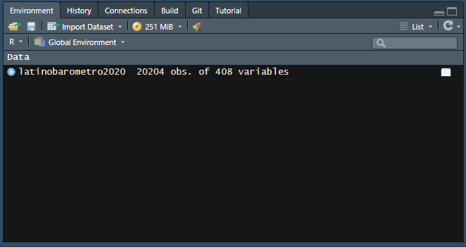

Código
install.packages("pacman")R data analisis
El desarrollo de esta guía tiene por objetivo revisar algunos procedimientos básicos de la preparación de datos con R, que son necesarios para luego poder analizar e interpretar los datos.
Por temas de orden y reproducibilidad, en este curso vamos a separar en dos momentos el trabajo con datos, y dos archivos de código correspondientes:
Preparación corresponde a lo que se conoce generalmente como “limpieza”, es decir, realizar las modificaciones necesarias para poder efectuar los análisis. Estas modificaciones previas al análisis son necesarias ya que los datos originales con los que se va a trabajar en general no vienen perfectamente adaptados a los análisis que se quieren hacer. Por lo tanto, en cuanto a datos también hacemos la distinción entre datos originales y datos preparados (o procesados).
Análisis: se relaciona tanto con análisis descriptivos asociados a las preguntas de investigación y como también modelamiento de datos para contrastar hipótesis de investigación.

Tanto la preparación como el análisis (que son parte del concepto más general de procesamiento) quedan registrados cada uno en un archivo de código.
Archivo de código R: archivo con extensión .R donde se almacena el código de análisis. Para generarlo desde RStudio: File > New File > R Script (o ctrl+shift+N), y para grabarlo File > Save (o ctrl+s), y darle nombre la primera vez (recordar: sin tilde ni ñ, y evitar espacios)
El documento de código de preparación posee 5 partes, más una sección de identificación inicial:
Al final de esta práctica la idea es que cada un_ elabore y entienda su propio documento de preparación de datos.
En el ejemplo vamos a procesar variables de confianza en instituciones políticas y variables de caracterización sociodemográfica utilizando los datos de la encuesta Latinobarómetro .
Latinobarómetro es un estudio de opinión pública que aplica anualmente alrededor de 20.000 entrevistas en 18 países de América Latina representando a más de 600 millones de habitantes
“Los gobiernos latinoamericanos, que venían en declive junto con sus democracias desde inicios de la década de 2010, como reflejan los datos de Latinobarómetro, llegaron a fines de 2018 al annus horribilis con la caída de Nicaragua y Venezuela desde su condición de democracias para entrar en la categoría de autocracias y dictadura.
De los hiperpresidentes de la primera década del siglo con altos niveles de crecimiento en todos los países y altos niveles de aprobación, la región pasó en la segunda década a los subpresidentes, con una baja en aprobación de gobierno a la mitad, en menos de 10 años. Este rechazo al desempeño de las elites gobernantes, indica su fracaso a fines de 2019 en varios países de la región.” (Latinobarómetro, informe 2021, p. 7)
El presente ejercicio tiene por objetivo el procesar los datos para obtener las variables relevantes para el estudio de la Confianza en instituciones políticas, entendida como el grado en que los individuos confian en distintas instituciones políticas a nivel nacional, como el gobierno, la justicia, los partidos políticos, etc. Para ello, junto con variables de confianza, consideraremos también variables de estatus (educación), y variables de caracterización sociodemográfica (sexo y edad).
Como sabemos, la lógica de R es instalar librerías (solo 1 vez, con install.packages("librería")), y luego cargarlas cada vez que es necesario usarlas (con library(librería)). El problema de esto es que a veces no se sabe claramente qué librerías están instaladas y cuales no, lo que va a arrojar error al cargarlas. Y, como sucede en R, existe una librería para solucionar este problema que se llama pacman (package manager). Lo que hace pacman es cargar la librería, y si no está instalada, la instala y la carga:
Para utilizar la primera vez (si es que no está instalada):
install.packages("pacman")Y en adelante, las librerías se cargan así pacman::p_load(libreria1,libreria2,libreriaX) :
pacman::p_load(dplyr, sjmisc, car, sjlabelled, stargazer, haven)Para esta sesión vamos a utilizar Las librerías que vamos a utilizar son:
dplyr: ajuste general de datossjmisc: descripción y exploración de base de datoscar: principalmente la función recode para recodificar/agrupar valores de variablestargazer: para tabla descriptivaAjustar espacio de trabajo
Previo a la carga de nuestra base de datos, se recomienda ejecutar los siguientes comandos:
rm(list=ls()) # borrar todos los objetos en el espacio de trabajo
options(scipen=999) # valores sin notación científicaLa función rm(list=ls()) permite comenzar con un espacio de trabajo (environment) vacío y sin otros objetos. Así también, la función options(scipen=999) desactiva la notación científica, es decir, veremos los valores numéricos con todos sus decimales.
Datos
Las bases de datos se pueden cargar de un archivo local o en línea. Para este caso utilizaremos un archivo en línea que viene en formato RData: latinobarometro2020.RData. Abrir bases de datos en otros formatos: Los formatos mas comunes en que se almacenan las bases de datos son .dta (Stata), .sav (Spss) y RData (R). Para abrir desde R utlilizamos la librería haven y sus funciones read_dta y read_sav según corresponda. Ej: datos <- read_dta("base_casen.dta"). Recordar antes instalar/cargar la librería: pacman::p_load(haven)
#cargamos la base de datos desde internet
load(url("https://github.com/Kevin-carrasco/metod1-MCS/raw/main/files/data/external_data/latinobarometro2020.RData"))o de manera local:
latinobarometro2020 <- read_dta("../files/data/external_data/latinobarometro2020.dta", encoding = "UTF-8")La base de datos aparece como un objeto en nuestro espacio de trabajo, con el nombre original con la que fue guardada (elsoc_2016):

Realizamos un chequeo básico de la lectura de datos: nombres de las variables y tamaño de la base en términos de casos y variables (en este ejemplo, 20204 casos y 408 variables).
dim(latinobarometro2020) # dimension de la base[1] 20204 408Y si se quiere revisar en formato de planilla de datos:
View(latinobarometro2020)Este paso consiste en crear un subset reducido de datos que contenga solo las variables de interés. Para ello:
find_var (de sjmisc, librería que cargamos en el paso 1), que nos entrega nombre de la variable en columna var.name. Por ejemplo, si buscamos alguna variable asociada al concepto Confianza:find_var(data = latinobarometro2020,"Confianza") col.nr var.name
1 36 p9stgbs
2 41 P13STGBS_A
3 42 P13STGBS_B
4 43 p13st_c
5 44 p13st_d
6 45 p13st_e
7 46 p13st_f
8 47 p13st_g
9 48 p13st_h
10 49 p13st_i
11 51 p15st_a
12 52 p15st_b
13 53 p15st_c
14 54 p15st_d
15 55 p15st_e
16 56 p15st_f
17 57 p15st_g
18 58 p15n_h
19 59 p15n_i
20 60 p15n_j
21 61 p15n_k
22 154 p36n_a
23 155 p36n_b
24 160 P36STMB_A
25 161 P36STMB_B
26 162 P36STMB_C
27 163 P36STMB_D
var.label
1 P9STGBS Confianza Interpersonal
2 P13STGBS.A Confianza en las Fuerzas Armadas
3 P13STGBS.B Confianza en la Policía / Carabineros
4 P13ST.C Confianza en la Iglesia
5 P13ST.D Confianza en el Congreso
6 P13ST.E Confianza en el Gobierno
7 P13ST.F Confianza en el Poder Judicial
8 P13ST.G Confianza en los Partidos Políticos
9 P13ST.H Confianza en: La institución Electoral del país
10 P13ST.I Confianza en: El presidente
11 P15ST.A Confianza en que las instituciones operan para mejorar nuestra calidad d
12 P15ST.B Confianza en que las instituciones operan para mejorar nuestra calidad d
13 P15ST.C Confianza en que las instituciones operan para mejorar nuestra calidad d
14 P15ST.D Confianza en que las instituciones operan para mejorar nuestra calidad d
15 P15ST.E Confianza en que las instituciones operan para mejorar nuestra calidad d
16 P15ST.F Confianza en que las instituciones operan para mejorar nuestra calidad d
17 P15ST.G Confianza en que las instituciones operan para mejorar nuestra calidad d
18 P15N.H Confianza en que las instituciones operan para mejorar nuestra calidad de
19 P15N.I Confianza en que las instituciones operan para mejorar nuestra calidad de
20 P15N.J Confianza en que las instituciones operan para mejorar nuestra calidad de
21 P15N.K Confianza en que las instituciones operan para mejorar nuestra calidad de
22 P36N.A Confianza en las Fuerzas Armadas de Estados Unidos
23 P36N.B Confianza en las fuerzas Armadas Chinas
24 P36STMB.A Confianza en el FMI (Fondo Monetario Internacional)
25 P36STMB.B Confianza en el BID (Banco Interamericano de Desarrollo)
26 P36STMB.C Confianza en el CAF (Banco de Desarrollo de América Latina)
27 P36STMB.D Confianza en el Banco MundialNos informa que hay una serie de variables relacionadas con confianza interpersonal y con instituciones. Probemos con la variable p13st_e.
Mediante la función select de dplyr, seleccionamos cada una de nuestras variables de interés y creamos una nueva base con el nombre proc_data, donde “proc” hace referencia a base procesada:
proc_data <- latinobarometro2020 %>% select(p13st_e, # Confianza en el Gobierno
p13st_d, # Confianza en el congreso
p13st_f, # Confianza en el Poder Judicial
p13st_g, # Confianza en los partidos políticos
reeduc_1,# nivel educacional
sexo,# sexo
edad,# edad
idenpa) # pais
# Comprobar
names(proc_data)[1] "p13st_e" "p13st_d" "p13st_f" "p13st_g" "reeduc_1" "sexo" "edad"
[8] "idenpa" Mediante el comando get_label obtenemos el atributo label de las variables.
sjlabelled::get_label(proc_data) p13st_e
"P13ST.E Confianza en el Gobierno"
p13st_d
"P13ST.D Confianza en el Congreso"
p13st_f
"P13ST.F Confianza en el Poder Judicial"
p13st_g
"P13ST.G Confianza en los Partidos Políticos"
reeduc_1
"REEDUC.1 Nivel de estudios alcanzado - Entrevistado (recodificado)"
sexo
"SEXO Sexo"
edad
"EDAD Edad"
idenpa
"IDENPA Identificación del País" Podemos ver que son largas o con códigos poco informativos, por lo tanto, es necesario cambiarlas por etiquetas más cortas y de fácil identificación.
Para facilitar el análisis, vamos a filtrar la base de datos para quedarnos solo con los casos de Chile. Para esto utilizamos la función filter de dplyr. Si revisamos el libro de códigos, el identificador de Chile es 152
proc_data <- proc_data %>% dplyr::filter(idenpa==152)Para el procesamiento de cada variable se seguirá el siguiente flujo de trabajo:
Y se recomienda también un descriptivo final para revisar que el procesamiento de cada variable está ok.
En Latinobarómetro, lass variables que permiten medir la Confianza en instituciones políticas en Chile son las siguientes:
p13st_e]: “P13ST.E Confianza en el Gobierno” (1 = Mucha; 4 = Ninguna)p13st_d]: “P13ST.D Confianza en el Congreso” (1 = Mucha; 4 = Ninguna)p13st_f]: “P13ST.F Confianza en el Poder Judicial” (1 = Mucha; 4 = Ninguna)p13st_g]: “P13ST.G Confianza en los Partidos Políticos” (1 = Mucha; 4 = Ninguna)a. Descriptivo
Para los descriptivos se utilizará la función frq, de la librería sjmisc:
frq(proc_data$p13st_e)x <numeric>
# total N=1200 valid N=1200 mean=3.27 sd=0.99
Value | N | Raw % | Valid % | Cum. %
--------------------------------------
-2 | 8 | 0.67 | 0.67 | 0.67
-1 | 11 | 0.92 | 0.92 | 1.58
1 | 23 | 1.92 | 1.92 | 3.50
2 | 176 | 14.67 | 14.67 | 18.17
3 | 358 | 29.83 | 29.83 | 48.00
4 | 624 | 52.00 | 52.00 | 100.00
<NA> | 0 | 0.00 | <NA> | <NA>En esta variable vemos valores asociados a la opción “No contesta” (-2) y “No sabe” (-1), que corresponde definirlos como casos perdidos (en el caso de R, como casos NA). El resto de los valores y etiquetas se encuentran en un orden contraintuitivo (mayor valor indica menos confianza), así que en la recodificiación nos haremos cargo de los casos perdidos y de reordenar las categorías.
b. Recodificación
Para recodificar utilizamos la función recode, de la librería car
proc_data$p13st_e <- recode(proc_data$p13st_e, "c(-2,-1)=NA")
proc_data$p13st_d <- recode(proc_data$p13st_d, "c(-2,-1)=NA")
proc_data$p13st_f <- recode(proc_data$p13st_f, "c(-2,-1)=NA")
proc_data$p13st_g <- recode(proc_data$p13st_g, "c(-2,-1)=NA")nota: con la función set_na de la librería sjmisc podemos recodificar toda la base de datos con un solo código, pero debemos estar completamente segur-s de que estos valores no tienen otra categoría asociada en otra variable.
proc_data <- proc_data %>% set_na(., na = c(-2, -1))Para reordenar las categorías volvemos a utilizar la función recode, de la librería car
proc_data$p13st_e <- recode(proc_data$p13st_e, "1=3; 2=2; 3=1; 4=0")
proc_data$p13st_d <- recode(proc_data$p13st_d, "1=3; 2=2; 3=1; 4=0")
proc_data$p13st_f <- recode(proc_data$p13st_f, "1=3; 2=2; 3=1; 4=0")
proc_data$p13st_g <- recode(proc_data$p13st_g, "1=3; 2=2; 3=1; 4=0")c - Etiquetado
Vamos a dar un nombre más sustantivo a las variables con la función rename, de la librería dplyr:
proc_data <- proc_data %>% rename("conf_gob"=p13st_e, # Confianza en el gobierno
"conf_cong"=p13st_d, # Confianza en el congreso
"conf_jud"=p13st_f, # Confianza en el Poder Judicial
"conf_partpol"=p13st_g) # Confianza en los partidos políticos nota: recodificación más rápida si estamos segur-s de todos los valores
proc_data <- proc_data %>% mutate_at(vars(starts_with("conf")), ~(4-.))Además de cambiar el nombre, queremos cambiar las etiquetas de las variables.
proc_data$conf_gob <- set_label(x = proc_data$conf_gob,label = "Confianza: Gobierno")
get_label(proc_data$conf_gob)[1] "Confianza: Gobierno"proc_data$conf_cong <- set_label(x = proc_data$conf_cong, label = "Confianza: Congreso")
get_label(proc_data$conf_cong)[1] "Confianza: Congreso"proc_data$conf_jud <- set_label(x = proc_data$conf_jud, label = "Confianza: Poder judicial")
get_label(proc_data$conf_jud)[1] "Confianza: Poder judicial"proc_data$conf_partpol <- set_label(x = proc_data$conf_partpol, label = "Confianza: Partidos politicos")
get_label(proc_data$conf_partpol)[1] "Confianza: Partidos politicos"d. Otros ajustes
Para este caso vamos a crear una variable que sea la suma de los cuatro items de confianza.
proc_data$conf_inst <- (proc_data$conf_gob+proc_data$conf_cong+proc_data$conf_jud+proc_data$conf_partpol)
summary(proc_data$conf_inst) Min. 1st Qu. Median Mean 3rd Qu. Max. NA's
0.00 0.00 2.00 2.42 4.00 12.00 38 get_label(proc_data$conf_inst)[1] "Confianza: Gobierno"Vemos que una etiqueta de la variable anterior.
proc_data$conf_inst <- set_label(x = proc_data$conf_inst, label = "Confianza en instituciones")Revisión final
Nuevamente un descriptivo de cada variable para confirmar que el procesamiento está ok:
frq(proc_data$conf_gob)Confianza: Gobierno (x) <numeric>
# total N=1200 valid N=1181 mean=0.66 sd=0.80
Value | N | Raw % | Valid % | Cum. %
--------------------------------------
0 | 624 | 52.00 | 52.84 | 52.84
1 | 358 | 29.83 | 30.31 | 83.15
2 | 176 | 14.67 | 14.90 | 98.05
3 | 23 | 1.92 | 1.95 | 100.00
<NA> | 19 | 1.58 | <NA> | <NA>frq(proc_data$conf_cong)Confianza: Congreso (x) <numeric>
# total N=1200 valid N=1178 mean=0.59 sd=0.71
Value | N | Raw % | Valid % | Cum. %
--------------------------------------
0 | 628 | 52.33 | 53.31 | 53.31
1 | 408 | 34.00 | 34.63 | 87.95
2 | 134 | 11.17 | 11.38 | 99.32
3 | 8 | 0.67 | 0.68 | 100.00
<NA> | 22 | 1.83 | <NA> | <NA>frq(proc_data$conf_inst)Confianza en instituciones (x) <numeric>
# total N=1200 valid N=1162 mean=2.42 sd=2.49
Value | N | Raw % | Valid % | Cum. %
--------------------------------------
0 | 397 | 33.08 | 34.17 | 34.17
1 | 141 | 11.75 | 12.13 | 46.30
2 | 130 | 10.83 | 11.19 | 57.49
3 | 111 | 9.25 | 9.55 | 67.04
4 | 169 | 14.08 | 14.54 | 81.58
5 | 71 | 5.92 | 6.11 | 87.69
6 | 41 | 3.42 | 3.53 | 91.22
7 | 41 | 3.42 | 3.53 | 94.75
8 | 44 | 3.67 | 3.79 | 98.54
9 | 11 | 0.92 | 0.95 | 99.48
10 | 4 | 0.33 | 0.34 | 99.83
11 | 1 | 0.08 | 0.09 | 99.91
12 | 1 | 0.08 | 0.09 | 100.00
<NA> | 38 | 3.17 | <NA> | <NA>Vemos que los valores (labels) de cada categoría de las primeras variables que recodificamos no se corresponden con el nuevo valor. Para re-etiquetar valores usamos la función set_labels, de la librería sjlabelled
proc_data$conf_gob <- set_labels(proc_data$conf_gob,
labels=c( "Ninguna"=0,
"Poca"=1,
"Algo"=2,
"Mucha"=3))
proc_data$conf_cong <- set_labels(proc_data$conf_cong,
labels=c( "Ninguna"=0,
"Poca"=1,
"Algo"=2,
"Mucha"=3))
proc_data$conf_jud <- set_labels(proc_data$conf_jud,
labels=c( "Ninguna"=0,
"Poca"=1,
"Algo"=2,
"Mucha"=3))
proc_data$conf_partpol <- set_labels(proc_data$conf_partpol,
labels=c( "Ninguna"=0,
"Poca"=1,
"Algo"=2,
"Mucha"=3))y volvemos a revisar
frq(proc_data$conf_gob)Confianza: Gobierno (x) <numeric>
# total N=1200 valid N=1181 mean=0.66 sd=0.80
Value | Label | N | Raw % | Valid % | Cum. %
------------------------------------------------
0 | Ninguna | 624 | 52.00 | 52.84 | 52.84
1 | Poca | 358 | 29.83 | 30.31 | 83.15
2 | Algo | 176 | 14.67 | 14.90 | 98.05
3 | Mucha | 23 | 1.92 | 1.95 | 100.00
<NA> | <NA> | 19 | 1.58 | <NA> | <NA>frq(proc_data$conf_cong)Confianza: Congreso (x) <numeric>
# total N=1200 valid N=1178 mean=0.59 sd=0.71
Value | Label | N | Raw % | Valid % | Cum. %
------------------------------------------------
0 | Ninguna | 628 | 52.33 | 53.31 | 53.31
1 | Poca | 408 | 34.00 | 34.63 | 87.95
2 | Algo | 134 | 11.17 | 11.38 | 99.32
3 | Mucha | 8 | 0.67 | 0.68 | 100.00
<NA> | <NA> | 22 | 1.83 | <NA> | <NA>reeduc_1] = REEDUC.1 Nivel de estudios alcanzado - Entrevistado (recodificado)a. Descriptivo
frq(proc_data$reeduc_1)x <numeric>
# total N=1200 valid N=1200 mean=5.05 sd=1.22
Value | N | Raw % | Valid % | Cum. %
--------------------------------------
1 | 8 | 0.67 | 0.67 | 0.67
2 | 53 | 4.42 | 4.42 | 5.08
3 | 36 | 3.00 | 3.00 | 8.08
4 | 161 | 13.42 | 13.42 | 21.50
5 | 643 | 53.58 | 53.58 | 75.08
6 | 109 | 9.08 | 9.08 | 84.17
7 | 190 | 15.83 | 15.83 | 100.00
<NA> | 0 | 0.00 | <NA> | <NA>b. Recodificación
Vemos que no hay datos perdidos
Valores
Para hacer más fácil el análisis, recodificamos en tres categorías (en este caso decisión arbitraria. Se debería tener una razón teórica para recodificar)
1. Analfabeto = Educacion basica = 1
2 Básica incompleta = Educacion basica = 1
3. Básica completa = Educacion basica = 1
4. Secundaria, media, técnica incompleta = Educacion media = 2
5. Secundaria, media, técnica completa = Educacion media = 2
6. Superior incompleta = Educacion superior = 3
7. Superior completa = Educacion superior = 3
# recodificacion usando funcion 'recode' de la libreria car
proc_data$reeduc_1 <- car::recode(proc_data$reeduc_1, "c(1,2,3)=1; c(4,5)=2; c(6,7)=3")Comprobar con un nuevo descriptivo:
frq(proc_data$reeduc_1)x <numeric>
# total N=1200 valid N=1200 mean=2.17 sd=0.55
Value | N | Raw % | Valid % | Cum. %
--------------------------------------
1 | 97 | 8.08 | 8.08 | 8.08
2 | 804 | 67.00 | 67.00 | 75.08
3 | 299 | 24.92 | 24.92 | 100.00
<NA> | 0 | 0.00 | <NA> | <NA>Se observa que los valores coinciden con la recodificación (los casos se acumulan entre las categorías 1 y 3), pero las etiquetas ahora no coinciden; se soluciona en el siguiente paso.
c. Etiquetado
Para re-etiquetar valores usamos la función set_labels, de la librería sjlabelled
proc_data$reeduc_1 <- set_labels(proc_data$reeduc_1,
labels=c( "Educacion basica"=1,
"Educacion media"=2,
"Educacion superior"=3))Luego renombramos la variable con un nombre más sustantivo
proc_data <- rename(proc_data,"educacion"=reeduc_1)Además de cambiar el nombre, queremos cambiar la etiqueta de la variable.
get_label(proc_data$educacion)NULLproc_data$educacion <- set_label(x = proc_data$educacion,label = "Educación")sexo] = SEXO Sexoa. Descriptivo
frq(proc_data$sexo)x <numeric>
# total N=1200 valid N=1200 mean=1.54 sd=0.50
Value | N | Raw % | Valid % | Cum. %
--------------------------------------
1 | 555 | 46.25 | 46.25 | 46.25
2 | 645 | 53.75 | 53.75 | 100.00
<NA> | 0 | 0.00 | <NA> | <NA>b. Recodificación
En general esta variable no tiene problemas de casos perdidos ni de etiquetas, pero de todas maneras vamos a hacer un cambio de acuerdo a convenciones en análisis de datos, donde por lo general hombres tienen valor 0 y mujeres 1:
proc_data$sexo <- car::recode(proc_data$sexo, "1=0;2=1")c. Etiquetado
Y ahora cambiamos las etiquetas de acuerdo a la recodificación anterior:
proc_data$sexo <- set_labels(proc_data$sexo,
labels=c( "Hombre"=0,
"Mujer"=1))También queremos cambiar la etiqueta de la variable.
get_label(proc_data$sexo)NULLproc_data$sexo <- set_label(x = proc_data$sexo,label = "Sexo")Revisar con un nuevo descriptivo:
frq(proc_data$sexo)Sexo (x) <numeric>
# total N=1200 valid N=1200 mean=0.54 sd=0.50
Value | Label | N | Raw % | Valid % | Cum. %
-----------------------------------------------
0 | Hombre | 555 | 46.25 | 46.25 | 46.25
1 | Mujer | 645 | 53.75 | 53.75 | 100.00
<NA> | <NA> | 0 | 0.00 | <NA> | <NA>edad] = EDAD Edad.a. Descriptivo
frq(proc_data$edad)x <numeric>
# total N=1200 valid N=1200 mean=44.49 sd=17.01
Value | N | Raw % | Valid % | Cum. %
-------------------------------------
18 | 31 | 2.58 | 2.58 | 2.58
19 | 29 | 2.42 | 2.42 | 5.00
20 | 25 | 2.08 | 2.08 | 7.08
21 | 23 | 1.92 | 1.92 | 9.00
22 | 21 | 1.75 | 1.75 | 10.75
23 | 26 | 2.17 | 2.17 | 12.92
24 | 28 | 2.33 | 2.33 | 15.25
25 | 19 | 1.58 | 1.58 | 16.83
26 | 21 | 1.75 | 1.75 | 18.58
27 | 23 | 1.92 | 1.92 | 20.50
28 | 19 | 1.58 | 1.58 | 22.08
29 | 22 | 1.83 | 1.83 | 23.92
30 | 34 | 2.83 | 2.83 | 26.75
31 | 21 | 1.75 | 1.75 | 28.50
32 | 26 | 2.17 | 2.17 | 30.67
33 | 21 | 1.75 | 1.75 | 32.42
34 | 14 | 1.17 | 1.17 | 33.58
35 | 22 | 1.83 | 1.83 | 35.42
36 | 28 | 2.33 | 2.33 | 37.75
37 | 14 | 1.17 | 1.17 | 38.92
38 | 24 | 2.00 | 2.00 | 40.92
39 | 23 | 1.92 | 1.92 | 42.83
40 | 32 | 2.67 | 2.67 | 45.50
41 | 21 | 1.75 | 1.75 | 47.25
42 | 16 | 1.33 | 1.33 | 48.58
43 | 22 | 1.83 | 1.83 | 50.42
44 | 16 | 1.33 | 1.33 | 51.75
45 | 25 | 2.08 | 2.08 | 53.83
46 | 19 | 1.58 | 1.58 | 55.42
47 | 15 | 1.25 | 1.25 | 56.67
48 | 26 | 2.17 | 2.17 | 58.83
49 | 19 | 1.58 | 1.58 | 60.42
50 | 35 | 2.92 | 2.92 | 63.33
51 | 6 | 0.50 | 0.50 | 63.83
52 | 24 | 2.00 | 2.00 | 65.83
53 | 7 | 0.58 | 0.58 | 66.42
54 | 13 | 1.08 | 1.08 | 67.50
55 | 27 | 2.25 | 2.25 | 69.75
56 | 18 | 1.50 | 1.50 | 71.25
57 | 17 | 1.42 | 1.42 | 72.67
58 | 34 | 2.83 | 2.83 | 75.50
59 | 17 | 1.42 | 1.42 | 76.92
60 | 24 | 2.00 | 2.00 | 78.92
61 | 18 | 1.50 | 1.50 | 80.42
62 | 21 | 1.75 | 1.75 | 82.17
63 | 15 | 1.25 | 1.25 | 83.42
64 | 20 | 1.67 | 1.67 | 85.08
65 | 12 | 1.00 | 1.00 | 86.08
66 | 24 | 2.00 | 2.00 | 88.08
67 | 9 | 0.75 | 0.75 | 88.83
68 | 12 | 1.00 | 1.00 | 89.83
69 | 15 | 1.25 | 1.25 | 91.08
70 | 30 | 2.50 | 2.50 | 93.58
71 | 9 | 0.75 | 0.75 | 94.33
72 | 10 | 0.83 | 0.83 | 95.17
73 | 8 | 0.67 | 0.67 | 95.83
74 | 8 | 0.67 | 0.67 | 96.50
75 | 8 | 0.67 | 0.67 | 97.17
76 | 12 | 1.00 | 1.00 | 98.17
77 | 5 | 0.42 | 0.42 | 98.58
78 | 2 | 0.17 | 0.17 | 98.75
79 | 2 | 0.17 | 0.17 | 98.92
80 | 4 | 0.33 | 0.33 | 99.25
82 | 1 | 0.08 | 0.08 | 99.33
84 | 2 | 0.17 | 0.17 | 99.50
85 | 3 | 0.25 | 0.25 | 99.75
86 | 1 | 0.08 | 0.08 | 99.83
87 | 1 | 0.08 | 0.08 | 99.92
89 | 1 | 0.08 | 0.08 | 100.00
<NA> | 0 | 0.00 | <NA> | <NA>b. Recodificación: no es necesario en este caso
c. Etiquetado
Cambio la etiqueta de la variable.
get_label(proc_data$edad)NULLproc_data$edad <- set_label(x = proc_data$edad,label = "Edad")Antes de guardar la base procesada, revisamos nuevamente todas las variables con una tabla descriptiva general mediante la función stargazer (de la librería homónima)
Primero vamos a reformatear el objeto proc_data como base de datos (as.data.frame), paso necesario para que sea reconocido como tal por stargazer
proc_data <-as.data.frame(proc_data)
stargazer(proc_data, type="text")
===========================================
Statistic N Mean St. Dev. Min Max
-------------------------------------------
conf_gob 1,181 0.660 0.800 0 3
conf_cong 1,178 0.594 0.714 0 3
conf_jud 1,186 0.717 0.789 0 3
conf_partpol 1,178 0.451 0.673 0 3
educacion 1,200 2.168 0.549 1 3
sexo 1,200 0.537 0.499 0 1
edad 1,200 44.491 17.008 18 89
idenpa 1,200 152.000 0.000 152 152
conf_inst 1,162 2.420 2.489 0 12
-------------------------------------------Si se desea modificar las columnas que aparecen en la tabla se puede ocupar la opción summary.stat, donde se pueden especificar:
Por ejemplo, si quiero una tabla solo con promedio, n, sd y p75: stargazer(data, type="text", summary.stat = c("mean", "n", "sd", "p75"))
El comando para guardar es save:
save(proc_data,file = "[ruta hacia carpeta local en su computador]/ELSOC_ess_merit2016.RData")En este caso, seguimos una estructura de carpetas de datos, separando en una carpeta los datos originales, y en otra (proc) los datos procesados:
save(proc_data,file = "files/data/latinobarometro_proc.RData")De rutas, estructura de carpetas y otros
Encontrando la ruta a carpeta local: lo más fácil es crear la carpeta donde se desean guardar los datos desde el administrador de archivos del computador. Luego, posicionarse con el cursor sobre la carpeta y seleccionar “Propiedades”, en la ventana emergente debería aparecer la ruta hacia la carpeta en “Ubicación”. Copiar esa ruta y agregar al final el nombre de la carpeta (separada por slash)
Sobre los “slashes” (\ o /): en la ruta las carpetas y el archivo final aparecen separados por slashes, que según el sistema utilizado pueden ser slash (/) o backslash (\). En R por defecto se usa slash, pero en Windows backslash, por lo que si se usa Windows hay que reemplazarlos por backslash o también puede ser por un doble slash (//).
Por temas de compatibilidad general, en las rutas se recomienda evitar tildes, eñes, espacios, mayúsculas y guiones bajos (_).
Estructura de carpetas: para mantener el orden se sugiere seguir un protocolo de estructura de carpetas de proyecto, para lo que recomendamos el protocolo IPO, y que se adapta al flujo de trabajo presentado al principio de este práctico. Básicamente son tres carpetas: input, procesamiento, output. En la carpeta input crear la subcarpeta data-orig para guardar datos originales, y data-proc para los procesados. En procesamiento se guardan los archivos de código y en output las tablas y los gráficos.
Podemos conocer ciertas medidas de tendencia central utilizando algunas funciones de dplyr
proc_data %>% dplyr::group_by(sexo) %>% summarise(mean(conf_inst, na.rm=TRUE))# A tibble: 2 × 2
sexo `mean(conf_inst, na.rm = TRUE)`
<dbl> <dbl>
1 0 2.48
2 1 2.36proc_data %>% dplyr::group_by(educacion) %>% summarise(mean(conf_inst, na.rm=TRUE))# A tibble: 3 × 2
educacion `mean(conf_inst, na.rm = TRUE)`
<dbl> <dbl>
1 1 2.96
2 2 2.38
3 3 2.36library(sjPlot)#refugeeswelcomesjt.xtab(proc_data$educacion, proc_data$conf_inst, encoding = "UTF-8")| Educación | Confianza en instituciones |
Total | ||||||||||||
|---|---|---|---|---|---|---|---|---|---|---|---|---|---|---|
| 0 | 1 | 2 | 3 | 4 | 5 | 6 | 7 | 8 | 9 | 10 | 11 | 12 | ||
| Educacion basica | 30 | 11 | 6 | 6 | 12 | 6 | 4 | 4 | 7 | 3 | 0 | 0 | 1 | 90 |
| Educacion media | 268 | 95 | 83 | 79 | 121 | 45 | 24 | 29 | 28 | 3 | 4 | 1 | 0 | 780 |
| Educacion superior | 99 | 35 | 41 | 26 | 36 | 20 | 13 | 8 | 9 | 5 | 0 | 0 | 0 | 292 |
| Total | 397 | 141 | 130 | 111 | 169 | 71 | 41 | 41 | 44 | 11 | 4 | 1 | 1 | 1162 |
| χ2=37.850 · df=24 · Cramer's V=0.128 · Fisher's p=0.151 | ||||||||||||||